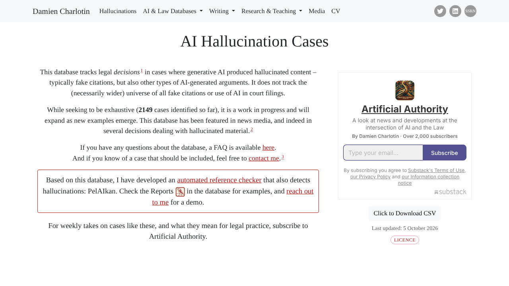

E n marzo de 2023, un abogado de Nueva York con treinta años de ejercicio presentó ante un tribunal federal un escrito con media docena de sentencias que no existían. Las había pedido a ChatGPT y, cuando dudó, le preguntó al propio modelo si eran reales. El modelo dijo que sí. Entre los casos citados figuraban Varghese v. China South Airlines y Martinez v. Delta Airlines: nombres verosímiles, citas internas verosímiles, resoluciones inexistentes.
El juez P. Kevin Castel impuso 5.000 dólares de sanción a los dos abogados del asunto Mata v. Avianca, no tanto por el error inicial como por haber sostenido los casos falsos después de que el tribunal preguntara por ellos. Esa historia se cuenta siempre como una anécdota sobre pereza profesional, y se aprovecha mejor leída de otra forma: la IA no se equivocó leyendo nada, se equivocó rellenando un hueco con lo que estadísticamente parecía ir ahí. Esta guía no va de sustituir a un abogado. Va de qué parte del trabajo de leer un documento legal puedes delegar hoy con red, y cuál no — y de por qué la diferencia entre ambas cosas es casi siempre esa misma: si la respuesta está en el texto o hay que inventarla. Si todavía no tienes claro por qué los modelos alucinan, empieza por ahí y vuelve.
1. No lee mal: rellena
Conviene separar dos fallos que se confunden todo el tiempo. Un modelo de lenguaje es bastante bueno localizando y resumiendo algo que está escrito delante de él: si el contrato dice que el preaviso es de quince días, te dirá quince días. El fallo que importa aparece cuando preguntas por algo que el documento no dice.
Pregunta «¿cuál es el plazo de preaviso?» a un contrato que guarda silencio sobre el preaviso y verás el problema en estado puro. La respuesta útil sería «no aparece». La respuesta probable es «treinta días», porque treinta días es lo que suele poner en los miles de contratos parecidos con los que se entrenó el modelo. No te está mintiendo ni ha leído mal: está completando el patrón más plausible, que es literalmente su trabajo.
Ahora cruza eso con cómo funciona un contrato. Lo que te perjudica rara vez es la cláusula que leíste y entendiste mal; es la cláusula que nadie puso, el límite de responsabilidad que no existe, la prórroga automática que no viste, el pacto de no competencia sin plazo. El daño vive en las ausencias. Y la ausencia es exactamente el terreno donde un modelo de lenguaje es menos fiable.
Resumen de las 3.000 palabras siguientes: la IA sirve para encontrar y ordenar lo que hay en un documento, y no sirve para afirmar lo que no hay ni para decirte qué significa jurídicamente. Casi todas las técnicas de esta guía consisten en forzarla a trabajar solo en el primer lado de esa línea.
2. Qué dicen los datos, y qué no dicen
Hay dos estudios que se citan sin parar en este tema y que conviene conocer con sus límites puestos, porque apuntan en direcciones distintas.
El estudio que dice que la IA gana
En 2018, LawGeex enfrentó su sistema a veinte abogados corporativos estadounidenses con experiencia en la revisión de cinco acuerdos de confidencialidad, 153 cláusulas en total. La máquina detectó el 94% de los problemas y los abogados el 85% de media; el mejor humano empató en 94% y el peor se quedó en 67%. La diferencia de tiempo fue la que suele citarse: 26 segundos frente a unos 92 minutos.
Ahora los límites, que son grandes: el estudio lo encargó y pagó la propia empresa del producto, el tipo de documento era uno solo y de los más estandarizados que existen, la muestra era de veinte personas, y todo ello es anterior a los modelos de lenguaje actuales. Lo que ese dato sostiene razonablemente es algo estrecho pero real: cuando la tarea es comparar un documento muy estandarizado contra una lista cerrada de criterios, automatizarla funciona. Lo que no sostiene es nada sobre tu contrato de arrendamiento ni sobre un pacto de socios.
El estudio que dice que sigue inventando
El segundo es del RegLab y el instituto HAI de Stanford, publicado como preprint en 2024 y revisado por pares en el Journal of Empirical Legal Studies en 2025. Midieron herramientas jurídicas de pago —las que llevan búsqueda sobre bases de datos legales reales detrás, no un chat genérico— con 202 consultas corregidas a mano por juristas.
Los resultados: Lexis+ AI alucinó en el 17% de los casos y Westlaw AI-Assisted Research en el 33%, frente al 43% de GPT-4 a pelo. En aciertos, Lexis+ AI respondió correctamente el 65% de las veces, Westlaw el 42%, y Ask Practical Law AI un 19% con un 62% de respuestas incompletas.
Dos lecturas, y la segunda es la que importa. La primera: una herramienta jurídica específica alucina menos que un chat general, lo cual era de esperar. La segunda, menos cómoda: ninguna llega a cero, y estamos hablando de productos de pago diseñados para abogados, con documentos reales detrás. Si una de cada seis respuestas de la mejor del grupo necesita comprobación, el único flujo de trabajo sensato es uno que dé por supuesta la comprobación.
Y una advertencia sobre extrapolar: ese estudio mide búsqueda de jurisprudencia, no revisión de contratos. Son tareas distintas, y la revisión de contratos es la más fácil de las dos, porque el documento lo aportas tú y no hay que ir a buscarlo. Sirve para calibrar cuánta desconfianza merece el texto jurídico generado; no para poner un porcentaje a lo que te pasará revisando un contrato.
Y el recuento que sigue creciendo
El caso Mata v. Avianca de 2023 dejó de ser una rareza hace tiempo. Las sanciones han ido subiendo de escala: en marzo de 2026 el Tribunal de Apelaciones del Sexto Circuito sancionó con 15.000 dólares a cada uno de dos abogados de Tennessee por escritos con más de dos docenas de citas falsas o tergiversadas (el tribunal razonó que cada abogado debe leer y comprobar personalmente cada cita, sin entrar a declarar que la causa fuera la IA). Existe incluso una base de datos pública, mantenida por el investigador Damien Charlotin, que recopila resoluciones judiciales de todo el mundo en las que la IA produjo contenido inventado: a 16 de octubre de 2026 su contador iba por 2.199 casos. Vale la pena leer la advertencia que la propia base incluye, porque es más interesante que la cifra: solo recoge resoluciones judiciales que abordan el asunto, no el universo —necesariamente mayor— de todas las citas falsas presentadas ante un tribunal. Es decir, 2.199 es el suelo, no el techo.
Ninguna de esas sanciones es por usar IA. Todas son por firmar algo sin comprobarlo.
3. Lo que sí hace bien hoy
Todo lo de esta lista tiene una cosa en común: la respuesta está dentro del documento que le das, así que puedes verificarla en diez segundos.
- Extraer y tabular los datos duros. Partes, fechas de inicio y fin, duración, importes, forma de pago, penalizaciones, plazos de preaviso, ley aplicable, jurisdicción. Pedirlo en tabla y con el número de cláusula al lado convierte cuarenta páginas en algo que se revisa de un vistazo.
- Traducir la jerga a castellano llano. «Sin perjuicio de lo anterior y a los efectos oportunos» no significa nada que no puedas decir en diez palabras. Para entender qué te están pidiendo, esto funciona muy bien.
- Comparar dos versiones. Qué cambió entre el borrador que enviaste y el que te devolvieron. Es tedioso a mano, mecánico para una máquina, y es donde se cuelan las modificaciones que nadie mencionó en el correo.
- Comparar contra tu propia lista de condiciones. Si tienes claro qué aceptas y qué no —un pliego, aunque sea de ocho puntos en una nota—, pedirle que señale dónde el contrato se desvía de esa lista es el uso con mejor relación entre esfuerzo y resultado.
- Construir el calendario de obligaciones. Qué tengo que hacer, antes de cuándo, y qué pasa si no. Sacar eso en forma de fechas es trabajo puramente de extracción.
- Preparar las preguntas para tu abogado. Convertir un documento largo en seis preguntas concretas y bien formuladas. Suena modesto y es probablemente lo que más dinero ahorra: pagas asesoramiento sobre lo que importa en vez de pagar por que alguien lea de cero.
Para documentos escaneados, fotos de un contrato en papel o PDFs con tablas, el cuello de botella es antes: que la IA lea bien el archivo. Eso tiene sus propias trampas y está en la guía de analizar imágenes y PDFs. Si el PDF son páginas escaneadas, comprueba siempre que ha visto todas: no es raro que se salte un anexo entero sin avisar.
4. Lo que no puede hacer (y no es cuestión de esperar un modelo mejor)
- Decirte si una cláusula es válida o abusiva. Eso depende de la ley aplicable, de la jurisprudencia y del tipo de contrato — una cláusula perfectamente válida entre dos empresas puede ser nula frente a un consumidor. Un modelo entrenado mayoritariamente con material estadounidense te contará con toda naturalidad una regla que aquí no rige.
- Valorar si el riesgo te conviene. Una cláusula puede ser legal, clara, ejecutable y aun así malísima para ti. Eso no es una pregunta de derecho, es una pregunta de negocio, y requiere saber cosas sobre tu situación que no están en el documento.
- Negociar. Saber qué cláusula se pelea, qué se cede para ganar otra cosa y qué se deja pasar porque nunca se va a aplicar es criterio acumulado sobre cómo se comporta la otra parte. No sale de leer el texto.
- Responder por el resultado. Esta es la decisiva y no es técnica. Un profesional tiene responsabilidad civil y, normalmente, un seguro detrás. Un modelo no responde de nada: si te equivocas siguiendo su criterio, el error es íntegramente tuyo.
Fíjate en que las dos últimas no se arreglan con un modelo mejor. Son límites de responsabilidad, no de capacidad. Por bueno que llegue a ser el sistema, el que firma sigues siendo tú.
5. Antes de subir nada: ya estás tratando datos
Un contrato casi nunca es un texto neutro. Lleva nombres, NIF, direcciones, a veces datos bancarios, condiciones económicas o información de salud. Subirlo a un servicio de IA de un tercero es un tratamiento de datos personales, con todo lo que eso arrastra: necesitas una base jurídica, y si el proveedor trata esos datos por tu cuenta, el contrato de encargado de tratamiento del artículo 28 del RGPD, además de saber dónde se procesan y si se usan para entrenar.
La parte que más se pasa por alto es la del entrenamiento. En varios servicios, el plan de consumo y el plan de empresa tienen políticas distintas sobre si tus textos se usan para mejorar el modelo. Mirarlo una vez en la cuenta que vas a usar cuesta cinco minutos.
Si el documento es sensible y no tienes un entorno con garantías, hay dos salidas razonables: anonimizar antes de subir —sustituir nombres, cifras identificativas y direcciones por marcadores, revisar la cláusula ya anonimizada, y volver a poner los datos en tu copia— o ejecutar un modelo en local, que no manda nada a ningún sitio. La primera opción es suficiente en la mayoría de los casos cotidianos; la segunda es la que vale cuando el documento no puede salir de tu ordenador. El detalle de qué se queda cada servicio está en cómo proteger tus datos al conectar la IA.
Si ejerces la abogacía, esto no es higiene opcional
En España el Consejo General de la Abogacía Española aprobó en 2026 la Circular 3/2026, una circular interpretativa sobre el uso de sistemas de IA y el deber de verificación. No prohíbe la IA generativa en el ejercicio profesional. Lo que hace es elevar el deber de verificación y control a obligación central: el profesional debe prever que estos sistemas pueden producir contenido inventado y actuar con la máxima diligencia al comprobarlo. Y añade la parte que afecta a este apartado: introducir datos personales de un cliente en una IA generativa de un tercero es un tratamiento sujeto al RGPD, y el secreto profesional se extiende sobre cualquier proveedor técnico que intervenga en ese proceso.
Sobre el AI Act, para situarlo sin alarmismo: un asistente que te prepara un borrador o te resume un contrato para que lo revise una persona no es, por sí mismo, un sistema de alto riesgo. El punto 8 del Anexo III se refiere a la IA que asiste a autoridades judiciales en la investigación e interpretación de los hechos y del derecho, que es otra cosa. Además, el paquete Digital Omnibus aplazó las obligaciones de alto riesgo del Anexo III al 2 de diciembre de 2027 y las del Anexo I al 2 de agosto de 2028, mientras que los deberes de transparencia del artículo 50 sí rigen desde el 2 de agosto de 2026. El detalle de qué obliga a quién está en la guía del AI Act.
Qué hay de nuevo en octubre de 2026
- El recuento de casos judiciales con contenido inventado por IA de la base de Damien Charlotin ha pasado de 2.149 (5 de octubre) a 2.199 (16 de octubre), con 8 casos en España y 1.501 en EE. UU. Casi seis de cada diez corresponden a personas sin abogado: no es solo un problema de despachos. Más cifras en la guía de alucinaciones.
- En la abogacía española, la Circular interpretativa 3/2026 del CGAE vincula el deber de verificación con el Código Deontológico. La prensa especializada recoge que el mal uso puede acarrear infracciones graves, con suspensiones de entre 15 días y un año; confírmalo en la circular y en el régimen disciplinario aplicable a tu caso.
- El calendario del reglamento europeo de IA ha cambiado: el alto riesgo del Anexo III pasa al 2 de diciembre de 2027 y el del Anexo I al 2 de agosto de 2028; la transparencia del artículo 50 rige desde el 2 de agosto de 2026. Está en El AI Act explicado.
- La firma electrónica gratuita de Documenso (AGPL-3.0) mantiene, según su página de precios, 5 documentos al mes en el plan gratuito; el plan individual sin límite cuesta 25 dólares al mes (300 al año). Revisa el precio antes de contar con él.
Una comprobación de cinco minutos antes de firmar algo que revisaste con IA:
- Busca con Ctrl+F cada cita literal que te dio el modelo.
- Comprueba a mano fechas, importes, plazos y nombres.
- Pregunta por las ausencias (limitación de responsabilidad, prórroga automática, preaviso, no competencia).
- Anota las dudas y llévalas a un abogado si hay dinero o años de por medio.
Esta guía es información general, no asesoramiento jurídico. La IA puede ayudarte a entender un documento, pero la decisión de firmarlo y su validez dependen de la ley aplicable y de tu situación concreta.
6. El método de la cita literal
Esto es el núcleo práctico de la guía. Seis reglas, y la segunda hace casi todo el trabajo.
- Dale el documento, no se lo cuentes. Sube el archivo. Si describes el contrato de memoria, el modelo trabaja sobre tu resumen y hereda tus omisiones.
- Exige cita literal y número de cláusula en cada respuesta. La instrucción es: «para cada punto, copia entre comillas el fragmento exacto del documento en el que te basas e indica la cláusula; si no encuentras base textual, escribe NO APARECE». Esto es lo que convierte una afirmación imposible de auditar en una comprobación de diez segundos con Ctrl+F. Y si no puede citar, no puede fingir.
- Pregunta por las ausencias una por una. No sirve «¿falta algo?»: eso invita a rellenar. Sirve recorrer tu lista: «¿hay cláusula de limitación de responsabilidad? ¿Hay prórroga automática? ¿Hay plazo de preaviso? ¿Hay pacto de confidencialidad y con qué duración?». Una pregunta cerrada por cláusula.
- Hazlo en dos pasadas. La primera, neutra: extraer y tabular. La segunda, adversaria: «si yo fuera la otra parte y quisiera perjudicarme, ¿qué cláusula de este contrato usaría y cómo?». Dan resultados distintos y la segunda es la que suele destapar lo incómodo.
- Comprueba a mano todos los números, fechas y nombres. Siempre, sin excepción, aunque el resto esté bien. Son el dato más fácil de transcribir mal y el más caro de dar por bueno.
- No le pidas la conclusión jurídica. Pídele el texto, la tabla y los huecos. «¿Me conviene firmar esto?» y «¿es legal esta cláusula en España?» son preguntas para un abogado; pedírselas al modelo garantiza una respuesta segura de sí misma y sin nadie detrás que responda por ella.
La regla de la cita literal no es una formalidad: cambia qué puede salir mal. Sin ella, un error te llega indistinguible de un acierto. Con ella, un error se cae solo en cuanto buscas la frase en el documento y no está.
7. Un prompt para copiar
Pégalo tal cual, sustituye la lista de comprobación por la tuya y adjunta el documento en el mismo mensaje. Está escrito para que el modelo tenga que elegir entre citar o admitir que no hay nada.
# TAREA Analiza el documento adjunto. NO des opiniones jurídicas ni valores si debo firmarlo. # REGLA ABSOLUTA Para cada afirmación, copia entre comillas el fragmento literal del documento en el que te basas e indica la cláusula o el apartado. Si no hay base textual, escribe exactamente: NO APARECE. No completes con lo que sea habitual en contratos parecidos. # PARTE 1 — EXTRACCIÓN (en tabla) Partes | Objeto | Fecha de inicio | Duración | Prórroga | Importes y forma de pago | Penalizaciones | Plazo de preaviso | Ley aplicable | Jurisdicción # PARTE 2 — COMPROBACIÓN (una línea por punto: SÍ + cita / NO APARECE) - Limitación de responsabilidad - Prórroga automática y cómo se evita - Causas de resolución y quién puede invocarlas - Confidencialidad y su duración - Pacto de no competencia (ámbito, plazo, compensación) - Cesión del contrato a un tercero - Modificación unilateral de precios o condiciones [sustituye esta lista por la tuya] # PARTE 3 — OBLIGACIONES CON FECHA Qué debo hacer, antes de cuándo, y qué consecuencia tiene no hacerlo. # PARTE 4 — LECTURA ADVERSARIA Si fueras la otra parte y quisieras perjudicarme, qué cláusulas usarías y cómo. Cita cada una. # PARTE 5 Las 5 preguntas concretas que debería llevarle a un abogado sobre este documento.
La parte 5 es la que convierte esto en algo útil de verdad. Si quieres una versión más corta para documentos cotidianos —una factura rara, una carta de la administración, las condiciones de un servicio—, en el archivo hay un prompt suelto para entender un contrato listo para pegar.
8. Cuándo no usarla para esto
Hay documentos en los que el cálculo no sale, y conviene tenerlos identificados antes y no después:
- Cuando firmar mal cuesta más que un abogado. Compraventa de vivienda, pacto de socios, acuerdo de salida o despido, herencia, aval o garantía personal, cláusula de no competencia que te limite el trabajo durante años. El coste de la consulta es una fracción de lo que está en juego.
- Cuando el documento es confidencial y no tienes un entorno con garantías. Si no puedes responder a «¿dónde se procesa esto y se usa para entrenar?», no es el momento de subirlo.
- Cuando necesitas que alguien responda. Si el valor que buscas es que un profesional ponga su firma y su responsabilidad, la IA no participa de eso en ningún grado.
- Cuando el contrato es tu negocio. Si vives de licenciar, de royalties o de contratos marco, esa revisión es una competencia central. Automatizar la parte que te hace bueno en tu trabajo es un mal cambio.
Fuera de esos casos, el reparto que funciona es bastante estable: la IA extrae, ordena, traduce la jerga y señala huecos; tú decides; y cuando hay dinero o años de por medio, un profesional revisa lo que la IA ya ha dejado señalado. Esa última combinación no es un uso menor de la herramienta. Es el único en el que las dos partes hacen aquello en lo que de verdad son buenas.
Firma contratos online gratis con Documenso
Después de revisar un contrato con IA, toca firmarlo. Documenso es una alternativa de código abierto (AGPL-3.0) a DocuSign para firmar y enviar documentos a firmar por internet, sin imprimir ni escanear.
Cómo se usa
- Crea una cuenta gratuita en documenso.com.
- Sube el PDF del contrato o presupuesto.
- Añade a los firmantes por correo y coloca los campos de firma, fecha y nombre donde correspondan.
- Envía. Cada persona recibe un enlace y firma desde el móvil o el ordenador.
- Descarga el documento firmado cuando todos hayan terminado.
Según su página de precios, el plan gratuito permite 5 documentos al mes con hasta 10 destinatarios por documento y sin tarjeta. Si tienes conocimientos técnicos, también puedes instalarlo en tu propio servidor.
Lo honesto: si firmas muchos documentos necesitarás un plan de pago o tu propia instalación. Y no todas las firmas electrónicas tienen el mismo valor legal: para operaciones importantes, comprueba qué tipo de firma te exige la normativa de tu país.
Código: github.com/documenso/documenso